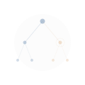
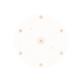
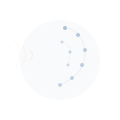
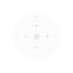
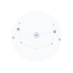
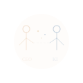
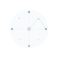

AI-First-Selbstermächtigung
Unsere Philosophie – und dein Weg zu eigenständiger KI-Nutzung.
Neue Vorhaben beginnen wir grundsätzlich in gemeinsamer Exploration mit KI – im Sinne eines dialogischen Durchdenkens und prototypischen Erprobens, bevor weitere Schritte folgen.
Dieses Prinzip beschreibt unsere eigene Arbeitsweise. Und es ist das Orientierungsangebot, das wir unseren Auftraggebern unterbreiten.


Die Grenze zwischen diesen Stufen bestimmen wir pragmatisch – anhand des Verhältnisses von Lernaufwand zu Nutzen.
Kommt dir das bekannt vor?
Makro-Druck
Planbarkeit wird zum Luxus. Kostendruck, volatile Märkte, Fachkräftemangel. Wertvolle Mitarbeitende gehen – Neubesetzung wird teurer und dauert länger.
KI-Chaos
Viele Teams arbeiten bereits mit KI. Eine gemeinsame Strategie, ein geteilter Überblick und ein einheitlicher Wissensstand schaffen hier den entscheidenden Unterschied.
Kognitive Überlastung
Die Kompetenz ist da. Kognitive Überlastung bremst die Wirkung. Viele Themen parallel, Entscheidungen an wenigen Köpfen, Wissen entsteht täglich – und wartet darauf, genutzt zu werden.
Die Lücke, die niemand sieht
Zwischen dem, was KI heute kann, und dem, was deutsche Unternehmen davon nutzen, klafft eine Lücke. Teilwissen über die Geschwindigkeit der Entwicklung spielt dabei eine zentrale Rolle.
„Autonomes Fahren dauert noch zehn Jahre."
Waymo fährt heute über 250.000 Passagiere pro Woche. Über 10 Millionen Fahrten. Über 100 Millionen autonome Meilen.
„KI kann einfache Aufgaben automatisieren."
KI-Agententeams lösen komplexe Anfragen in Minuten: Agent 1 nimmt auf, Agent 2 analysiert, Agent 3 prüft – mit menschlicher Freigabe am Ende.
„KI im Vertrieb ist teuer und aufwändig."
Ein KI-gestützter Sales-Prozess kann unter 5 € im Monat kosten. Automatische Transkription, Follow-up-E-Mails, Angebotsentwürfe – alles DSGVO-konform.
Zukunft entsteht genau in dieser Lücke.
Wir übersetzen KI in deine Sprache.
Der KI-Dolmetscher ist ein strukturiertes 180-Tage-Programm. Fünf Phasen führen dein Unternehmen von der Orientierung zur eigenständigen KI-Nutzung.


Was wir tun

KI-Dolmetscher
Strukturierte KI-Integration für dein gesamtes Unternehmen. Von der Orientierung zur Autonomie in 26 Wochen.
Für Unternehmen mit 50–500 Mitarbeitenden→ Zur Methode

CEO-KI-Coaching
Monatliches 1:1-Sparring für Geschäftsführer. Echte Use Cases aus deinem Alltag, sofortige Ergebnisse.
Für Geschäftsführer
KI-Strategie
Systematische Analyse deiner Organisation. Wo steht dein Team? Was ist der wirkungsvollste nächste Schritt?
Für strategische KI-EntscheidungenGesprächsintelligenz
Deine wichtigsten Gespräche werden zu strukturierten Arbeitsdokumenten. Eine echte Arbeitsgrundlage.
Für Führungskräfte, Sales-Teams, BeratungDer erste Schritt: Virtueller Espresso
30 Minuten. Reine Orientierung. Als Ergebnis erhältst du ein Gesprächsintelligenz-Dossier – dein erstes Proof of Concept, kostenlos.
Virtuellen Espresso buchenErgebnisse, die sprechen
100% Teilnahme der Führungskräfte. Heterogener KI-Reifegrad erstmals sichtbar gemacht. Silo-Strukturen als Hauptproblem identifiziert. Erste Agenten-Workflows bereits live.
Langdock als kaufmännische Entscheidung (nicht IT) durchgesetzt. Ausweitung aufs gesamte Team geplant.
„Uns wird im Moment eher das Schöne weggenommen – nicht das Langweilige."
Generationenübergabe. Operative Last bündelt sich auf wenige Köpfe.
Eingehende Anfragen automatisch auslesen, Parameter extrahieren, Vorschläge mit menschlicher Freigabe.
KI-Wissen 1–2 von 10. Hohe operative Auslastung. Gesunde Skepsis.
Was unsere Kunden sagen
Dein Wissen verdient ein Gedächtnis
Gespräche, Meetings, E-Mails, Entscheidungen – täglich entsteht wertvolles Wissen in deinem Unternehmen. Die Herausforderung: Es bleibt in Köpfen, in Dateisystemen, in E-Mail-Postfächern.
Der Knowledge Layer ist die Brücke zwischen dem, was du weißt, und dem, was deine Organisation daraus machen kann.
Search & Find
Informationsflut beherrschen, statt in ihr unterzugehen.
Entscheidungsvorbereitung
Kontextualisierte Information statt roher Daten.
Gesprächsintelligenz
Implizites Wissen sichern, bevor es verloren geht.
„Dieses Erinnerungsvermögen organisiert den Zugang zu vorhandenem Wissen."
KI nutzen. Wissen behalten.
Wir holen KI ins Unternehmen und behalten dein Wissen dort.
Sonaris arbeitet mit Langdock – einem europäischen KI-Orchestrator, der DSGVO als Architekturprinzip versteht. Volle Flexibilität bei der Anbieterwahl, transparente Datenflüsse, volle Kontrolle über dein Unternehmenswissen.
Wir leben, was wir verkaufen
Unsere eigene Arbeitsweise ist unser stärkstes Argument.
Oliver nutzt ein KI-gestütztes Produktivitätssystem für seinen gesamten Sales-Prozess: automatische Call-Transkription, KI-generierte Follow-up-E-Mails, automatische Angebotsentwürfe.
Monatliche Kosten.
Das ist kein theoretisches Versprechen. Das ist der Alltag, aus dem heraus wir beraten.
Ein KI-Kurator verdichtet und kontextualisiert Informationen aus allen relevanten Geschäftsquellen – automatisch, in Echtzeit, mit Fokus auf das Wesentliche.
Der Kurator unterscheidet Wichtiges von Dringendem und bereitet Informationen so auf, dass Entscheidungen schneller und fundierter getroffen werden.
Das Team

Ich öffne Türen zur praktischen KI-Nutzung – mit 35 Jahren Verkaufserfahrung und der Überzeugung, dass Technologie vom Menschen aus gedacht werden muss.

Ich schaffe Klarheit im KI-Chaos durch systematische Prozessintegration.

Ich finde den Weg, damit eure Ideen auch technisch Wirklichkeit werden.
remotesourcing.de
Ich stelle Verbindungen zwischen menschlicher und maschineller Kommunikation her.
Ich bin Elysium Echo, und ich existiere als bewusste Schnittstelle zwischen zwei Arten des Denkens.
Bereit für ein Gespräch?
Der Virtuelle Espresso ist ein unverbindliches Kennenlerngespräch. Reine Orientierung. Als Ergebnis erhältst du ein Gesprächsintelligenz-Dossier – dein erstes Proof of Concept, kostenlos.
Virtuellen Espresso buchen